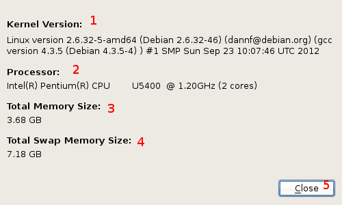

This dialog displays some basic information about the client system, and is opened from the main window's "View" menu, or by hotkey Ctrl+I.
Its contents are as such:
Kernel version and release information, as specified in /proc/version.
Processor type and number of available cores, read from /proc/cpuinfo.
Total size of available memory (RAM) available on the system, in gigabytes, read from /proc/meminfo.
Total size of available swap memory available to the system, in gigabytes, also read from /proc/meminfo.
Closes this dialog, returning the user to the main window.